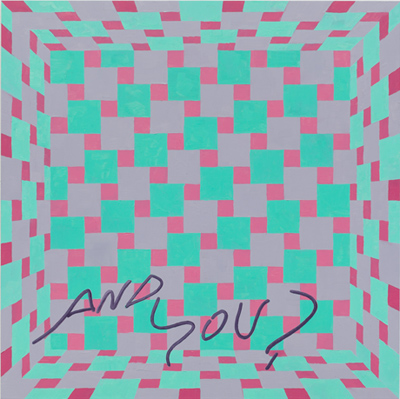

'Every day in every way I’m freely opening my senses
to the beauty in myself and opening up to all the beauty around me
and in all the people I will encounter'
Irina Arnaut
Vittorio Brodmann
Nicole Eisenman
John Giorno
Fabian Marti
Dave Miko
Curated by Ebony L. Haynes and Taylor Trabulus
June 11 - July 25, 2014
Opening reception: Wednesday June 11, 6-8PM
Positive affirmations are ideas or beliefs that you can repeat either internally or aloud. The short-term goal is to impress your subconscious with motivational thought. Through interminable repetition, the long-term goal is to let positive thought encourage positive lifestyle. For the affirming statement-as-meditation to be effective, it should not only be recited mentally but ideally, you should also be able to see it—in the form of text or imagery; Post-It-Notes on the mirror or a photo of a sunset on the dashboard of your car.
A possible side effect of this repetitive practice, where there is a lack of results: vehement disbelief in all things good.
Irina Arnault (Chisinau, Moldova, 1983) lives and works in New York, NY.
Vittorio Brodmann (Ettingen, Switzerland, 1987) lives and works in Vienna, Austria.
Nicole Eisenmann (Verdun, France, 1965) lives and works in New York, NY.
John Giorno (New York, NY, 1936) lives and works in New York, NY.
Fabian Marti (Fribourg, Switzerland, 1979) lives and works in Zurich, Switzerland.
Dave Miko (Shelton, CT, 1974) lives and works in Brooklyn, NY.
*Follow ‘jessicasdailyaffirmation’ on Instagram for daily affirmations through July 25th
Image: Dave Miko, and you?, 2014, oil on aluminum, 24 x 24 inches
Martos Gallery
540 West 29th Street
New York, NY
10001
212-560-0670